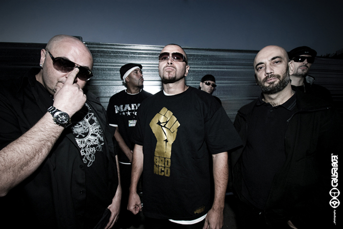
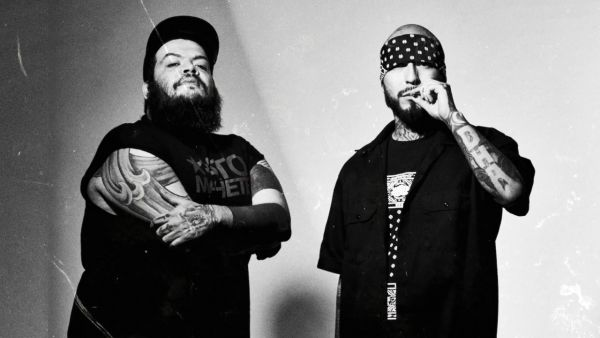

Cortesía: El Club de los Poetas Violentos
ORIGEN DEL RAP EN ESPAÑA
Está generalmente aceptado que el hip hop, cuyo origen tiene lugar en Estados Unidos en la década de los setenta, ingresa al mercado de habla hispana en Puerto Rico a inicio de la década de los 80 y luego hace su aparición en España en la primera mitad los años 80.
Uno de los factores que más contribuyeron a la aparición e implantación de la cultura hip hop en el país fue la presencia de bases militares estadounidenses en suelo español. Los militares acantonados en ellas, especialmente los de ascendencia afroamericana, seguían la estética hip hop y escuchaban rap tanto en la base, a través de la emisora de la misma o los discos que compartían y vendían en ella, como en las discotecas a las que acudían, como Stone's en Torrejón de Ardoz.Uno de los referentes que suele citarse de modo habitual como punto de entrada del rap en España es la base aérea de Torrejón de Ardoz, cerca de Madrid. Tanto la música como la forma de vestir de los norteamericanos causaron un profundo impacto sobre jóvenes locales que posteriormente pasarían a crear rap en castellano, como Frank T, los integrantes del grupo VKR, o la pareja MC Randy & D.J. Jonco.
El baile propio a este fenómeno cultural y uno de sus elementos fundamentales, el breakdance, comenzó en la misma época en Madrid hacia principios de los años ochenta. Se ha señalado que su nacimiento tuvo lugar entre 1980 y 1981 en la zona de AZCA y de la mano de colectivos como Madrid City Breakers. Tanto el breakdance en particular como el hip hop en general cobran popularidad en España gracias al estreno en 1984 de películas estadounidenses en las cuales el breakdance es uno de los temas principales, como Beat Street y Breakdance.
Los primeros ejemplos de grafiti en España también surgen en la primera mitad de los años 1980. Es común la opinión de que el primer referente del grafiti en el país sería Muelle, pionero de un movimiento conocido como graffiti autóctono madrileño y un estilo llamado "flechero".

Cortesía: Control Machete
ORIGEN DEL RAP EN MÉXICO
Hacia mediados de los 80, comenzó a escuchar canciones como The Message de Flash Masters & The Furious Five y la canción de The Genius "Let's Break". Fue en 1985 cuando el rap comenzó a cobrar fuerza, año en el que nacieron los primeros grupos nacionales de rap: Sindicato Del Terror y 4to. Tren. Sindicato del terror produjo el sencillo "SDT", que es considerado el primer rap mexicano, y lograron competir con canciones como "Walk This Way" de Run-DMC en el país. Posteriormente miembros de Cypress Hill de DVX, The Beastie Boys o "Mentirosa" Mellow Man Ace escribieron "Figth For Your Right (To Party)" El término es muy importante en el mundo del rap en México porque representan el rap chicano.
Caló se lanzó en 1991, un proyecto de música hip-hop que ha integrado elementos de otros géneros musicales a lo largo de su carrera, desde la música pop hasta la música Kambia y el reggae, hasta el sonido, todo en el núcleo de la música rap. Sin embargo, el éxito comercial de Caló con canciones como "No puedo hacer más" o "Concentrate" también se ha enfrentado a la oposición de más bandas de rap nacionales. Su música forma parte de los primeros rap de España "Hot Songs", como "Te acuerdas" y "Mi abuela" de Vico C. y Wilfred & La Ganga, y "Te ves buena" de El General. Al mismo tiempo, la gente comenzó a interesarse en grupos estadounidenses y grupos compuestos por hispanos, como: NWA, Public Enemy, Wutang Clan, Cypress Hill y Kid Frost.
Entre 1990 y 1991 en pleno auge del rap de los 90, empiezan a surgir nuevas agrupaciones en la escena mexicana como lo son Speed Fire, Rapaz, 4to Del Tren, V.L.P. y Nasty Style
En el año de 1992, el desaparecido sello AMS edita el casete Real música rap, un EP de cinco canciones de Sindicato del Terror, siendo secundada en 1993 por la cinta EP Como estás feo de Speed Fire.
El año 1993 comienza a dar nuevas agrupaciones nacionales como: Vagabundos Underground, Controversia Funk y Sociedad Café.
En 1994 siguen nuevas agrupaciones nacionales del trio de Ciudad Madero, Tamaulipas Gente Loca y de Guadalajara, Jalisco La Otra Escoria.
En 1995 el rap sigue tomando fuerza y siguen surgiendo agrupaciones del Distrito Federal y Estado de México. Algunos de estos grupos son Kartel Aztlán, Crimen Urbano y entre otros.
El rap llega a un momento donde esta olvidado por las grandes disqueras tanto nacionales como internacionales y es en 1996 donde sale el disco "Mucho Barato" del trío de Monterrey Control Machete, producido por la disquera transnacional PolyGram., Logrando captar adeptos incluso seguidores de otros géneros musicales
En 1999 sale el disco de Control Machete, "Artillería pesada presenta..." y el anuncio de la firma con la multinacional EMI de Chicalangos proyecto de MC Luka.
Desde 2001, el rap underground / indie ha comenzado a destacarse porque antes no había una compañía discográfica multinacional y no recibió mucho apoyo. El álbum "Banda Rap" de Dyablo fue lanzado con varios artistas, entre ellos C-4, Locura Terminal, Boogie, 2 High, Jorge "El Jilguero" Morales, Original de La Sierra y Malverde. Estos discos fueron editados por su propia compañía discográfica Discos. Profeta y distribuidor Aztlan Discs. El 21 de agosto lanzó su primer disco oficial "Destrukxion", el cual fue aceptado por el público en el mundo underground del sur de Estados Unidos y México, sin algún tipo de apoyo para hacerse famoso. Dyablo vendió 5.000 copias en Estados Unidos en una semana, lo que marca un hito en el reconocimiento del trabajo independiente en la comunidad del rap mexicano.